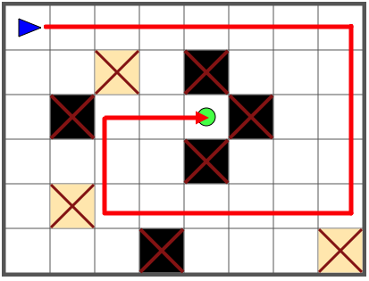
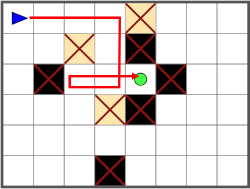
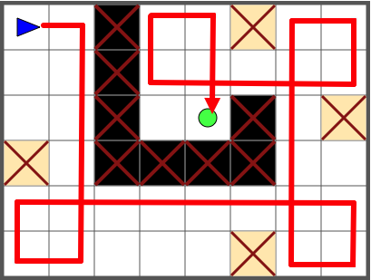

Ratkaisu
Robotti osaa kääntyä ainoastaan menosuuntaansa nähden oikealle. Tehtävässä tulee huomata, että jos haluamme kääntyä jossain kohtaa menosuuntaan nähden vasemmalle, pitää se tehdä usean oikealle kääntymisen avulla: kolme käännöstä oikealle vastaa kääntymistä vasemmalle.
Alla on esitetty kaksi ratkaisua. Myös muita on olemassa.
|  |  |
Alla on esitetty eräs ratkaisu. Myös muita on olemassa.

Tässä versiossa robotin piti tehdä useita kolmesta oikealle kääntymisestä koostuvia vasemmalle kääntymisiä. Nämä piti suunnitella huolellisesti niin, että kunkin kääntymisen jälkeen myös seuraava käännös onnistuu. Alla on esimerkki epäonnistuneesta ensimmäisestä käännöksestä, jonka jälkeen robotilla ei ole tilaa seuraavaan oikean kautta kiertävään vasemmalle kääntymiseen.

Alla on esitetty eräs mahdollinen ratkaisu. Myös muita lähes samanlaisia on olemassa.

Tämä on tietojenkäsittelyä!
Tietojenkäsittelyssä on paljon ongelmia, joissa meidän pitää analysoida jonkin tiettyjä sääntöjä noudattavan toimijan (esim. tässä robotin) käyttäytymistä tietyssä tilanteessa (tässä annetussa ruudukossa). Konkreettinen tehtävää osin muistuttava esimerkki voisi olla vaikkapa robotti-imuria ohjaavan ohjelmiston analysointi.
Tätä tehtävää voi lähestyä esimerkiksi noudattaen "taaksepäin työskentelyn" heuristiikkaa, jossa edetään lopullisesta tavoitteesta (maaliruudusta) askeleittain taaksepäin: millaisia mahdollisia edeltäviä askeleita on, joiden kautta voi päästä tämänhetkiseen tilanteeseen. Katso lisää esim. https://fi.wikipedia.org/wiki/Ratkaisemisen_taito#Heuristiikka.